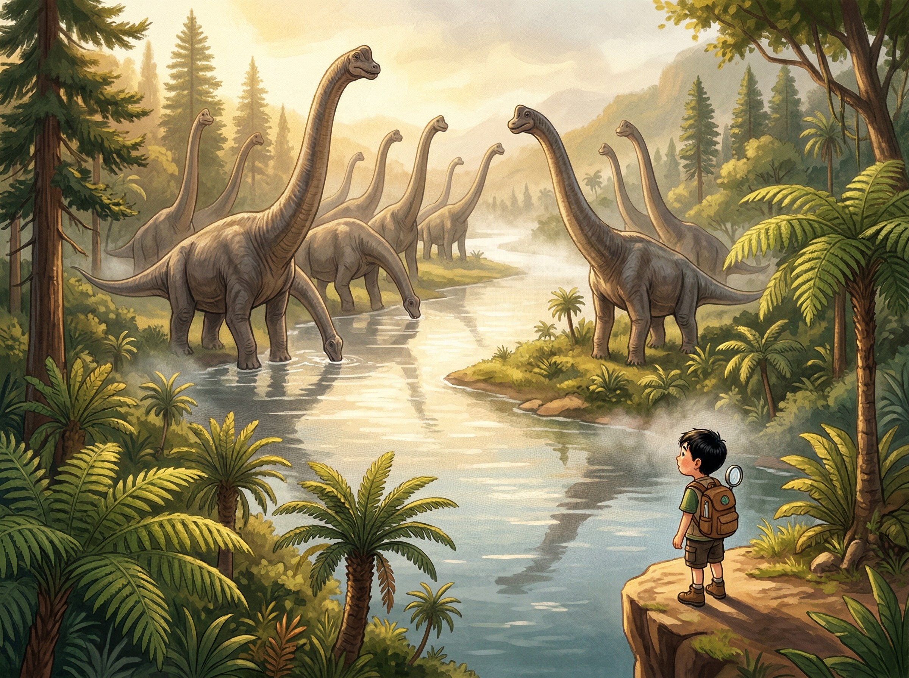
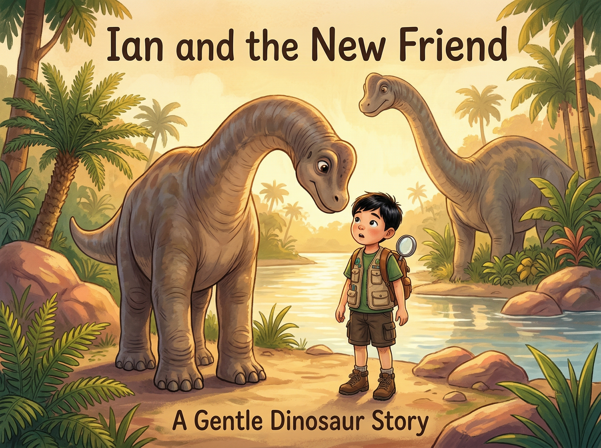
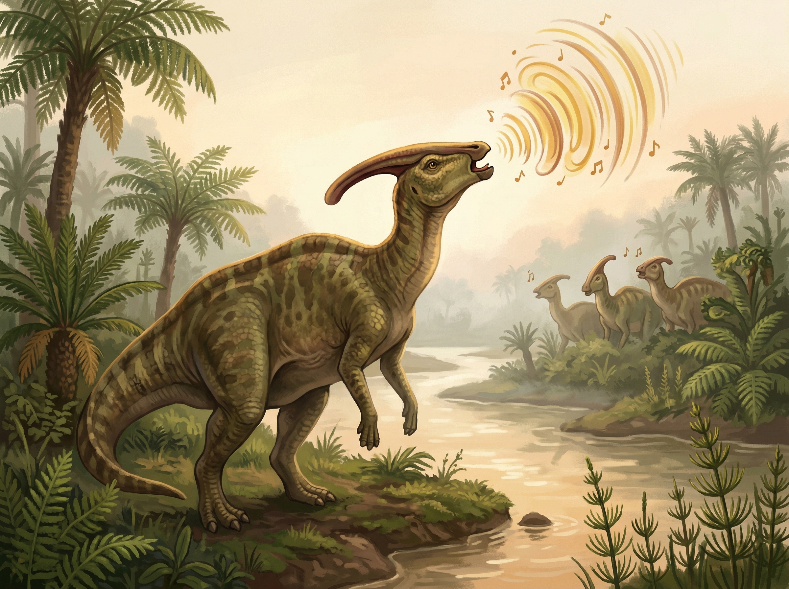

🦴 ×
0
‹
›
🦕 第三章
巨人的河谷
水循环 · 食物链 · 动物领地

Ian独自前进。翻过一座小山丘后——
眼前是一条
宽阔的河谷
。
而河边，站着他
从未见过的巨大生物
。
一群
腕龙
（Brachiosaurus）在喝水！
它们有
26米长
——
比
六层楼
还高！
🧒 "天哪……它们好大……"

一只
小腕龙
好奇地朝Ian走来——
它虽然是"宝宝"，但已经有
3米高
了！
它的大脚差点踩到Ian！
🧒 "哇！小心小心！"
Ian赶紧翻滚躲开。
小腕龙歪着脑袋看他——
眼神充满了好奇，没有恶意。

远处传来低沉的
"呜——"
声。
是一群
副栉龙
（Parasaurolophus）！
它们头上长长的
管状冠饰
就像一把天然的
法国号
！
💧 科学时间：水循环
为什么这么多恐龙都聚在河边？
因为
水
是所有生命的基础！
水在自然界不断循环：
☀️ 太阳加热水面 → 水
蒸发
变成水蒸气
☁️ 水蒸气升高变冷 → 变成
云
🌧️ 云里的水滴太重 → 变成
雨
落下
🏞️ 雨水汇成小溪 → 流进
河流
这个过程
永远不会停
！
你喝的水，恐龙也许也喝过！
🔺 科学时间：食物链金字塔
自然界的食物像一座
金字塔
：
🌿 最底层：
植物
（最多）
🦕 中间层：
食草动物
（比较多）
🦖 最顶层：
食肉动物
（最少）
每升一层，数量减少
10倍
！
需要
10吨植物
才能养活
1吨
食草恐龙，
需要
10吨食草恐龙
才能养活
1吨
食肉恐龙！
所以在这个河谷，你能看到
很多很多
腕龙，但肉食恐龙
很少
。
🔺 在食物链金字塔中，什么最多？
A. 食草动物（腕龙等）
B. 食肉动物（霸王龙等）
C. 植物（蕨类、树木等）
💧 按正确顺序排列水循环！（按顺序点击）
☁️ 水蒸气变成云
🏞️ 雨水汇成河流
☀️ 太阳加热，水蒸发
🌧️ 云变成雨落下
Ian仔细观察——腕龙群有
固定的行走路线
！
它们总是沿着河边同一条路走，
就像马路上的汽车一样。
🗺️ 科学时间：动物领地与习惯
大多数动物都有
固定的路线
和
领地
：
🐘 大象每年走同一条
迁徙路线
🐻 熊总是去同一条河里
抓鱼
🦌 鹿群有固定的
喝水地点
知道动物的习惯 =
安全通行
！
只要避开它们的路线，就不会撞上！
Ian等腕龙群往北走后，
沿着它们
不走的小路
穿过了河谷！
小腕龙回头看了他一眼，
像是在说再见。
🧒 "再见，大家伙！"
📚 你学到了什么
✅
水循环
：蒸发→云→雨→河流，永不停歇
✅
食物链金字塔
：植物最多，肉食动物最少（10:1）
✅ 副栉龙的
头冠
是天然的乐器
✅ 观察动物的
固定路线
可以安全通过
🌬️ 下一章：看不见的危险 →
📖 目录